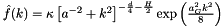
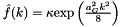
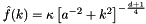
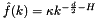
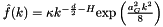
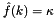
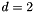
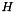
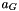
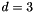

|
iPerc
1.0
iPerc: A software suite for modeling invasion percolation
|
|
iPerc
1.0
iPerc: A software suite for modeling invasion percolation
|
This module contains function for generating random media having a determined correlation function. More...
Public Member Functions | |
| subroutine | gen_random_media_3D (mat, nx, ny, nz, dx, dy, dz, H, ak, ag, correlation_function) |
| Generates a 3D matrix of random real numbers with zero mean and unity standard deviation and having a given correlation function. | |
| subroutine | gen_random_media_2D (mat, nx, ny, dx, dy, H, ak, ag, correlation_function) |
| Generates a 3D matrix of random real numbers with zero mean and unity standard deviation and having a given correlation function. | |
| subroutine | fourn (data, nn, ndim, isign) |
This module contains function for generating random media having a determined correlation function.
| subroutine module_random_media::fourn | ( | real, dimension(*) | data, |
| integer, dimension(ndim) | nn, | ||
| integer | ndim, | ||
| integer | isign | ||
| ) |
| subroutine module_random_media::gen_random_media_2D | ( | real, dimension(nx,ny) | mat, |
| integer | nx, | ||
| integer | ny, | ||
| real | dx, | ||
| real | dy, | ||
| real | H, | ||
| real | ak, | ||
| real | ag, | ||
| character(len=*) | correlation_function | ||
| ) |
Generates a 3D matrix of random real numbers with zero mean and unity standard deviation and having a given correlation function.
The correlation function currently available are :
General : 
Gaussian : 
Von Karman :
Exponential : 
Self-affine : 
Kummer : 
White noise : 
in the above expression  in 2D
| mat | 2D matrix containing the random values (Output) |
| nx | Grid dimension in the x direction (Input) |
| ny | Grid dimension in the y directionn (Input) |
| dx | Grid spacing in the x directionn (Input) |
| dy | Grid spacing in the y directionn (Input) |
| H | Hurst exponent  n (Input) |
| ak | Von karman correlation length  n (Input) n (Input) |
| ag | Gaussian correlation length  n (Input) |
| correlation_function | Desired correlation function (character string Input) : use correlation_function='general' for the most general correlation function use correlation_function='gaussian' for a gaussian correlation function use correlation_function='von_karman' for a Von Karman correlation function use correlation_function='self_affine' for a self-affine correlation function use correlation_function='kummer' for a Kummer correlation function use correlation_function='white_noise' for a white noise (you may not need this function for that) |
| subroutine module_random_media::gen_random_media_3D | ( | real, dimension(nx,ny,nz) | mat, |
| integer | nx, | ||
| integer | ny, | ||
| integer | nz, | ||
| real | dx, | ||
| real | dy, | ||
| real | dz, | ||
| real | H, | ||
| real | ak, | ||
| real | ag, | ||
| character(len=*) | correlation_function | ||
| ) |
Generates a 3D matrix of random real numbers with zero mean and unity standard deviation and having a given correlation function.
The correlation function currently available are :
General :
Gaussian :
Von Karman :
Exponential :
Self-affine :
Kummer :
White noise :
in the above expression  in 3D
| mat | 3D matrix containing the random values (Output) |
| nx | Grid dimension in the x direction (Input) |
| ny | Grid dimension in the y directionn (Input) |
| nz | Grid dimension in the z directionn (Input) |
| dx | Grid spacing in the x directionn (Input) |
| dy | Grid spacing in the y directionn (Input) |
| dz | Grid spacing in the z directionn (Input) |
| H | Hurst exponent n (Input) |
| ak | Von karman correlation length n (Input) |
| ag | Gaussian correlation length n (Input) |
| correlation_function | Desired correlation function (character string Input) : use correlation_function='general' for the most general correlation function use correlation_function='gaussian' for a gaussian correlation function use correlation_function='von_karman' for a Von Karman correlation function use correlation_function='self_affine' for a self-affine correlation function use correlation_function='kummer' for a Kummer correlation function use correlation_function='white_noise' for a white noise (you may not need this function for that) |
 1.7.5.1
1.7.5.1